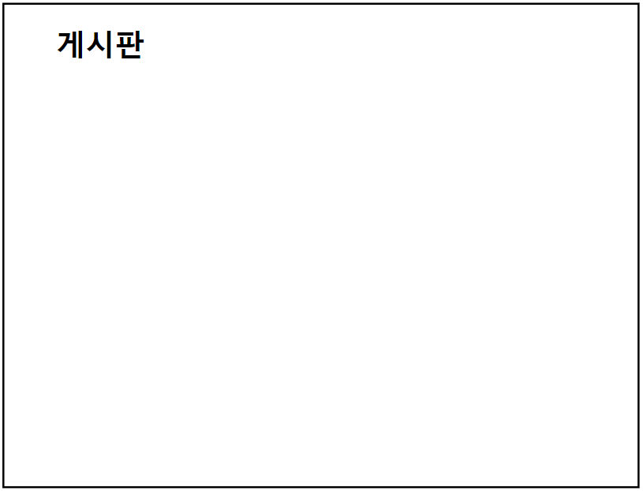
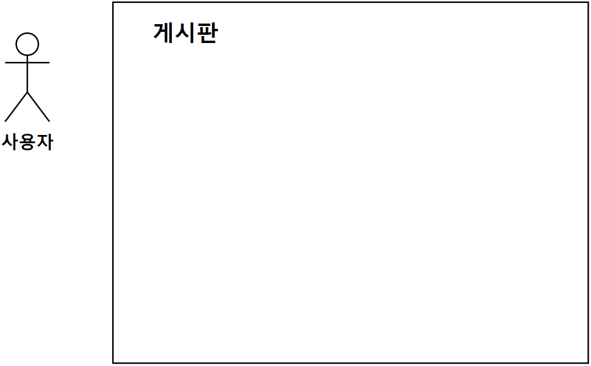
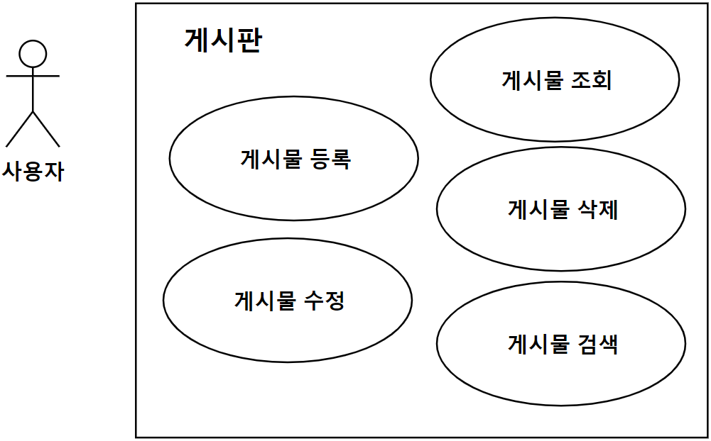
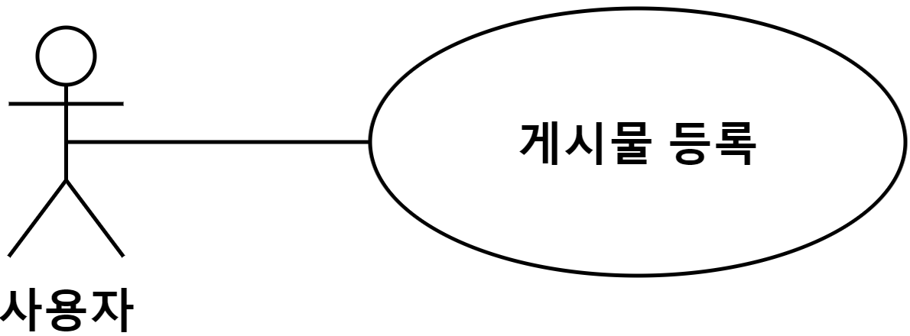
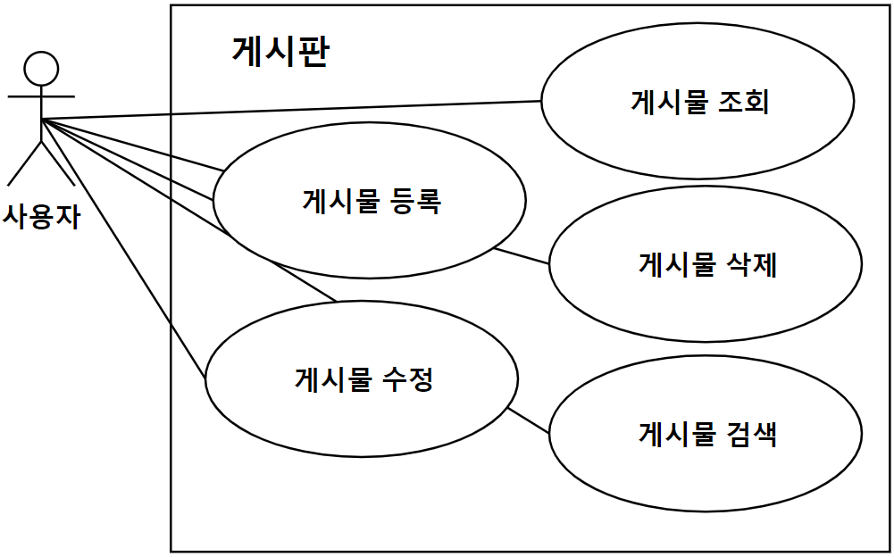

요구사항 : 글을 등록, 수정, 삭제할 수 있는 게시판 (단, 관리자 모드는 개발하지 않는다.)
요구사항을 확인해보면 통해 만들고자 하는 시스템은 '게시판'입니다.

‘게시판’ 외부에서 상호작용하는 액터는 게시을 등록하고 삭제하는 등의 역할을 하는 ‘사용자’를 식별할 수 있습니다.

사용자인 액터가 게시판인 시스템에서 사용할 수 있는 기능이 유스케이스입니다. 요구사항을 확인해보면 사용자는 게시판을 통해 글을 등록, 수정, 조회하는 작업을 수행하므로 유스케이스를 식별할 수 있습니다.

액터와 유스케이스 사이의 관계인 연관 관계를 정의해보겠습니다.
사용자와 게시물 등록 사이는 연관 관계입니다.

따라서 둘 사이의 관계를 실선으로 표시할 수 있습니다.
그렇다면 남은 유스케이스와 액터 사이의 관계를 표현해보세요.
